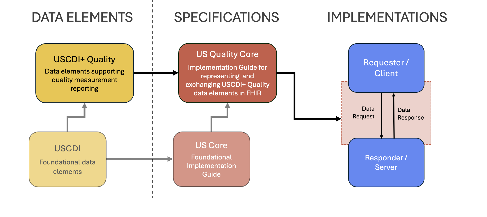

2026 US Quality Core Implementation Guide
0.5.0 - release

2026 US Quality Core Implementation Guide
0.5.0 - release

This page is part of the US Quality Core (v0.5.0: Release) based on FHIR (HL7® FHIR® Standard) R4. This is the current published version. For a full list of available versions, see the Directory of published versions
| Official URL: http://fhir.org/guides/onc/us-quality-core/ImplementationGuide/fhir.onc.us-quality-core | Version: 0.5.0 | ||||
| Active as of 2026-06-05 | Computable Name: USQualityCore | ||||
This Implementation Guide (IG) is not an update to health IT certification criteria or processes regulated by the Office of the National Coordinator for Health Information Technology (ONC). Readers should monitor final rules provided by programs such as the Centers for Medicare & Medicaid Services (CMS) and/or ONC for information on official updates to the health IT certification process and measure submission requirements for quality programs.
The US Quality Core Implementation Guide provides guidance for implementing USCDI+ Quality in FHIR to support consistent, interoperable representation and exchange of quality data for quality measurement and reporting programs. It defines profiles that derive from and extend the base FHIR version R4 resources and US Core profiles to provide a common foundation for implementing, sharing, and evaluating quality-related knowledge artifacts across quality improvement efforts. It also defines basic system capability expectations for exchanging data to support digital quality measurement and reporting over standard FHIR interfaces.
This guide reflects a coordinated federal effort to enable standardized FHIR-based exchange of data for digital quality measurement and reporting. ONC has established the USCDI+ Quality data element list as a common, reusable foundation that can support quality measurement across programs and settings over time, with a transparent process for proposing and considering additional data elements in future versions. This guide specifies how to represent and exchange the USCDI+ Quality data elements as needed to support digital quality measurement and reporting programs, including electronic clinical quality measures (eCQMs) used in certain CMS quality reporting programs, as well as providing guidance on additional data elements used in other quality reporting programs. For more detail on USCDI+ Quality and its scope, see the USCDI+ Quality page in this guide.
This guide descends directly from the Quality Improvement Core (QI-Core) Implementation Guide, which aligns with the standards adopted for the ONC Health IT Certification Program, including FHIR, US Core, and USCDI. The initial version of this guide targets USCDI+ Quality V1 data elements. It is based on the QI-Core Implementation Guide v6.0.0 (QI-Core 6.0.0), which aligns with the US Core Implementation Guide v6.1.0 (US Core 6.1.0) and USCDI v3.1.1
This guide extends QI-Core by providing USCDI+ Quality guidance within profiles through the use of flags for USCDI+ Quality relevant elements. It also introduces CapabilityStatements that define specific expectations for actors exchanging US Quality Core data over standard RESTful FHIR interfaces. The technical content in this initial version of US Quality Core is intended to be backward compatible with QI-Core 6.0.0. Details of the specific changes made from QI-Core 6.0.0 are provided in the Change Log.

This guide is divided into several pages, which are listed at the top of each page in the menu bar.
The US Quality Core IG provides requirements and guidance for using FHIR to implement the USCDI+ Quality data elements. The scope of the conformance expectations of this version of the guide is limited to the representation and exchange of data described in USCDI+ Quality V1. Note that not all USCDI+ Quality V1 data elements are in scope for this version's conformance requirements. See the In-Scope USCDI+ Quality Data Elements section for a complete list of the USCDI+ Quality V1 data elements that are in scope for the conformance requirements of this guide.
The scope of this guide is limited to the published content of QI-Core 6.0.0 and US Core 6.1.0.
USCDI+ Quality V1 data elements that are not readily represented in the profiles provided by QI-Core 6.0.0 or US Core 6.1.0 are outside the scope of this version of the guide. Implementers are encouraged to provide feedback for inclusion in future versions of this guide.
This guide retains all artifacts provided by QI-Core 6.0.0, with limited alterations described below, to support the adoption by existing QI-Core implementers. The US Quality Core profiles adhere to a naming convention that uses the prefix "US Quality Core". For example, the US Quality Core profile of Patient is named US Quality Core Patient.
These limited FHIR artifact changes made in this guide include:
Note that the informational ModelInfo file that supports implementations using CQL has been updated to reflect the changes made to US Quality Core. See CQL Artifacts and Patterns (Informational) for details; this content is not part of the conformance requirements of this guide.
Content in this initial version of the US Quality Core is primarily based on the QI-Core 6.0.0, as managed by the HL7 Clinical Quality Information Workgroup and the supporting Quality Improvement (QI) community.
Footnotes:
Consistent with Executive Order 14168 the Sex, Sexual Orientation, and Gender Identity, data elements have been removed or updated in the Patient Demographics/Information Data Class. ↩